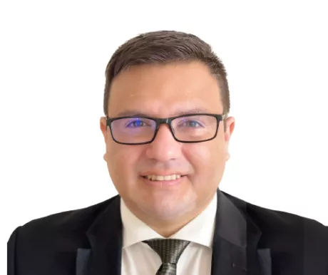

Elige el formato de tu interes
-
Fecha de Inicio
18 de setiembre
-
Horario
Lunes y miércoles de 6:30 p.m. a 10:30 p.m.
-
Duración
22 meses aproximadamente
-
Inversión
25 cuotas de S/.596
-
Asesor
Karen Clavo
-
Fecha de Inicio
17 de Agosto
-
Horario
Sábados de 9:00 a.m. a 1:00 p.m. y de 2:00 p.m. a 6:00 p.m.
-
Duración
22 meses
aproximadamente -
Inversión
25 cuotas de S/.596
-
Asesor
Karen Clavo
-
Fecha de Inicio
21 de agosto
-
Horario
Online
-
Duración
24 meses aproximadamente
-
Inversión
24 cuotas de S/.621
-
Asesor
Karen Clavo
Siempre Conectados
Mirtha Nino
Graduada de la Maestría en Docencia Universitaria y Gestión Educativa. Consultora en Acreditación Universitaria y Docente TC en la Universidad Científica del Sur. Orgullosa de iniciar la mejora en la Calidad de Educación en Huánuco, lugar donde nació.
Ver video
Integra la Docencia Universitaria con la Gestión Educativa
La educación representa un factor determinante para el desarrollo de una sociedad. En este sentido, es de vital importancia que los docentes comprendan el entorno cambiante en el cual se desarrolla el aprendizaje y adapten las metodologías de enseñanza de acuerdo a las necesidades del alumno.
Asimismo, la gestión eficiente de las instituciones educativas permite la formación de profesionales que aporten al crecimiento económico y el bienestar social de nuestro país y sus habitantes, a través del dominio de los procesos educativos, pedagógicos y administrativos que garanticen óptimas condiciones para el desempeño docente.
La Escuela de Postgrado de la UTP está al tanto de esta realidad y por ello ha diseñado la Maestría en Docencia Universitaria y Gestión Educativa, un programa que cuenta con una malla curricular basada en competencias, enfocada en el dominio de estrategias y metodologías aplicadas a la enseñanza, el aprendizaje y la gestión de instituciones educativas.
La maestría plantea la formación de profesionales que se desempeñen con excelencia en los diversos roles ligados a la docencia, con la finalidad de implementar estrategias que faciliten la mediación del conocimiento y el diseño de programas educativos.
Te invitamos a formar parte de nuestro programa, el cual integra las nuevas tecnologías al servicio de la educación, el desarrollo de habilidades de liderazgo y los aportes de la neurociencia en el funcionamiento del cerebro y aprendizaje.
Beneficios
-
Máster con la European School of Leadership de España
Quienes participen en este Máster podrán especializarse en Docencia, Liderazgo y Management a nombre de EUSCHOOL (Sede: Lima)
El Máster es opcional y no está incluido en la inversión de la Maestría en Docencia Universitaria y Gestión Educativa.
-
Nuestro Estilo de Pensamiento + Aprendizaje
La Maestría integra la docencia universitaria y la gestión educativa, con la evolución del pensamiento y el entorno actual del aprendizaje. El programa transforma la visión del participante y lo impulsa a desafiar sus límites y fomentar el desarrollo integral en sus alumnos.
-
Asignaturas que Trascienden la Enseñanza Tradicional
Las asignaturas se complementan en forma efectiva mediante el método de casos, debates, trabajos en equipo y presentaciones. Se proponen estrategias para asegurar el logro del aprendizaje auténtico y colaborativo, complementándolas con mecánicas de evaluación y retroalimentación.
-
Neurociencias y Aprendizaje
Nuestra Maestría promueve mejoras en las políticas educativas fundamentando sus propuestas en aportes de las neurociencias. Se aplican principios de enseñanza y aprendizaje basados en la investigación neurocientífica para facilitar la mediación del aprendizaje.
-
Aplicación de Nuevas Metodologías y Tecnologías en la Enseñanza
El programa fomenta la incorporación de nuevas metodologías y Tecnologías para optimizar el aprendizaje, de acuerdo a las características, experiencias y expectativas de los estudiantes.
-
Docentes con Formación Académica ólida y para crear una Verdadera Experiencia de Aprendizaje
El claustro de la EPG UTP está conformado por profesionales expertos, quienes cuentan con estudios superiores en universidades prestigiosas del mundo. Además, tienen una trayectoria forjada en la dirección de reconocidas instituciones educativas.
-
Liderazgo Transformador
La Maestría promueve una relación de estimulación y crecimiento para convertir a los seguidores en líderes y a los líderes en agentes de cambio. Se fomenta el desarrollo de habilidades interpersonales para motivar a los alumnos en el logro de los objetivos de aprendizaje a través de un alto rendimiento académico.
-
Lego ®Serious Play®
A través de esta metodología se potencia la experiencia en un proceso de formación y transformación, que se caracteriza por sus actividades innovadoras y profundamente vivenciales. Se logra el desarrollo de competencias como Team Building, Creatividad, Innovación y Comunicación entre otras.
-
Medición de Competencias
En la EPG nos aseguramos de que nuestros estudiantes logren las competencias generales y específicas ofrecidas en cada programa de Maestría. Por ello, todos los estudiantes participan en una medición de competencias, en tres oportunidades, durante sus estudios. Cada estudiante recibe un informe personalizado con sus resultados, lo que les permite identificar oportunidades de mejora. Esta información, nos permite seguir mejorando nuestros procesos formativos, ya que estamos comprometidos con la mejora continua.
Programa Internacional UNAM - México
"Formación Docente para la Gestión de la Educación del siglo XXI"
La EPGUTP y la UNAM, la Universidad más importante de México e Iberoamérica han diseñado este programa opcional con el objetivo de complementar la formación de sus estudiantes con las últimas metodologías de enseñanza y estrategias educativas.
Malla Curricular
x
Docentes
-
Adela Zevallos

Máster en Inteligencia Emocional en la U. Complutense de Madrid (España). Facilitadora en la Metodología Lego® Serious Play®. Es Consultora Senior en Cambridge International Consulting y Whalecom. Ha sido Consultor Senior de selección de personal en MIDIS.
-
Alexander Elías

Alexander Elias Máster en Administración de Empresas y Coach Profesional. Cuenta con cursos de especialización en Design Thinking, Customer Experience, Presentaciones de alto impacto, Liderazgo, Inteligencia emocional, Diseño instruccional y Estrategias de aprendizaje. Cuenta con más de 15 años de experiencia profesional en liderazgo de equipos, docencia universitaria, consultoría y capacitación empresarial.
-
Alexander López
Maestro en Educación, ITESM (México). Ha sido Gerente de Business Intelligence y Jefe Corporativo de Experiencia del Estudiante en Cibertec, Jefe de Calidad y Jefe de Gestión Docente en Zegel IPAE. Especialista en: servicios estudiantiles, retención, gestión docente y calidad educativa.
-
Ana Cecilia Mac Lean

Abogada (Juris Doctor) de la Georgetown University Law Center con una Maestría en Alta Dirección y Liderazgo de la Universidad Peruana de Ciencias Aplicadas. Consultora Independiente, Docente y Directora de la Maestría en Docencia Universitaria y Gestión Educativa de la Escuela de Postgrado de la UTP
-
Berenice Palomino

Doctoranda en Educación, Universidad de Valencia (España). MBA Directivo, UPC. MBA, IEDE (España), Psicóloga Educacional, PUCP. Diplomada en Administración de Proyectos TI. Es Jefe Académico de la EPGUTP, facilitadora certificada de la Metodología Lego® Serious Play® y Fundadora de TesisTip.
-
Carlos Saussure Figueroa
Magíster en Integración e Innovación Educativa de las TI y la Comunicación, PUCP. Ha sido Diseñador Educativo en Katari E-learning, Diseñador Instruccional en el Centro de Innovación Educativa UCSS Virtual y Diseñador Instruccional en PUCP Virtual.
-
Carlos Mory

Doctor en Ciencias de la Educación, UMCH. Magíster en Administración de Empresas, UPC. Magíster en Docencia para la Educación Superior con distinción “Magna Cum Laude”, UNAB (Chile). Master Europeo en Dirección de Negocios Internacionales, EOI (España). Doble licenciatura: Administración y Marketing, UPC. Egresado del Programa de Liderazgo para Ejecutivos, Cornell University (USA). Consultor independiente de pequeñas y medianas empresas. Catedrático Universitario a nivel pre y post grado. Más de 25 años de experiencia profesional en administración, consultoría, liderazgo de equipos, gestión académica, emprendimiento y marketing. Representante del Perú en el 2do. Curso Internacional de Gerencia de PYMES (Israel, 2003).
-
Carmin Briceño

Magíster en Dirección y Gestión del Talento Humano, UPN. con estudios Internacionales de Business Coaching,CENTRUM PUCP y EADA Business School. Life Coach, Coach Educativa, UPCH. Directora Ejecutiva – CEO Founder Happy Live By Carmin. Con 15 años de experiencia.
-
Daniel Tacca
Doctor en Educación, UNMSM, Magister en Educación, UNMSM. MBA, U. Rioja (España). Investigador Concytec con publicación de artículos en Scopus, WoS y SciELO.
-
David Franco
MBA Internacional, EPGUTP y UEMC (España). Certificado en Metodología Lego® Serious Play®. Máster en Marketing, UPC y EOI (España). Director Académico de la Escuela de Postgrado UTP. Ha sido Jefe de Marketing en Real Club de Lima, Jefe de Producto en Banco Cencosud, Jefe Académico en EPG UTP y Jefe de Marketing en Grupo Deltron.
-
Eduardo Laredo
Maestro en Docencia Universitaria y Gestión Educativa, UTP. Director de NeuroInvestigación de la empresa NeuroM, lideró el equipo de investigación de Neurofeedback para mejorar factores atencionales en estudiantes. Miembro de la Sociedad Neurocientífica Europea.
-
Francisco Coriñaupa

Doctor en Educación, Estudios de doctor en Ciencias Sociales, UNMSM. Magister en Política Social, UNMSM. Especialista en Gestión Educativa. Psicoanalista. Articulista en temas de educación, realidad social y psicoanálisis.
-
Iosef Navarro
Doctorando en RRPP, USMP. MBA, UPC. Máster en RRHH, EOI (España). Coach ICC (Londres). CCO del Grupo CPT. Director de Formación de Desarrollo Personal. Comunicador USMP. Consultor en Cultura y Comunicación Corporativa. Director del Centro Cultural Agapito Kanchara.
-
Iván Oviedo

Magíster en Dirección de Marketing y Dirección Comercial, EAE Business School (España). Gerente Comercial y Marketing en Geosys Perú y Business Development Manager en Degreed para Ecuador, Perú y Bolivia. Ha sido Sub Gerente de Marketing de Western Union Perú.
-
Ivonne Harvey
Doctora en Didáctica y Organización de Instituciones Educativas, US (España). Fundadora y Gerente General de SAIR Consultores. UNV Nacional e Internacional de las Naciones Unidas Experta en Procesos Formativos y Especialista en Procesos E-Learning.
-
Jadira Jara
Máster en Educación con Mención en Dirección Educacional,U. Enrique José Varona (Cuba). Es Consultora en temas de Currículo, Formación Docente y Materiales Educativos en el Ministerio de Educación del Perú. Ha sido Especialista de Evaluación en los Programas de Segunda Especialidad en la UNMSM.
-
Jeff Felipa
Magister en Administración de Empresas, INCAE Business School (Costa Rica). Magister en Dirección de Tecnología de la Información, UDEP. Gerente de Transformación e Innovación en Konecta Corporativa. Consultor y docente especializado en Metodologías ágiles e Innovación.
-
Jim Leiva
Magíster en Docencia Universitaria y Gestión Educativa. Magíster en Didáctica de la Matemática. Amplia experiencia como docente universitario con experiencia en el dictado de cursos de matemáticas en universidad pre grado en las especialidades de ingeniería, administración y ciencias de la comunicación. Docente de la Maestria Docencia Universitaria y Gestión Pública en la Escuela de Postgrado UTP. Investigador en el área de didáctica de la matemática y uso de herramientas digitales para la enseñanza. Asesor pedagógico en áreas de evaluación, diseño instruccional y en gestión pedagógica. Especialista del programa de Bachillerato Internacional y docente asesor del MINEDU.
-
José Llaullipoma

Maestro en Educación con Mención en Gestión de Instituciones Educativas, Facultad de Teología y Civil de Lima. Gestor en la Maestría en Integración e Innovación educativa de las TIC, PUCP.
-
Julio Granados

Magister en Educación Superior con mención en Acreditación, U. Occidente (Nicaragua) y MBA, UTP. Auditor en Sistemas de Gestión de Calidad - ISO 9001. Es Jefe de Proyectos Educativos, EPGUTP. Ha sido Supervisor de Carreras Profesionales en IFB-ASBANC y Responsable de Acreditación, Evaluación docente en diversas Instituciones Educativas.
-
Katherine Díaz
Magíster en Dirección de Personas, UP. Business Coach por la International Coaching Community - ICC (Londres). Es Senior Business Partner de la División de Coaching & Consultoría de Perú 8Mil. Ha sido Gerente Nacional de Gestión Institucional en Enseña Perú.
-
Marcela Noblecilla
Magister en Integración e Innovación Educativa de las Tecnologías de la Información y de la Comunicación, PUCP. Psicóloga Clínica y psicóloga Educativa del Desarrollo, UPC. Especialista en Educación Virtual del área de Gestión e Innovación Educativa, Universidad Científica del Sur.
-
Marlith Segura

Magíster en Gestión, Acreditación y Autoevaluación Educativa, USMP. Es subdirector de Calidad Educativa en la ENSABAP. Ha sido coordinador de formación docente en la UPCH para programas de UNESCO y MINEDU
-
Martin Maltese
MBA en Estrategias, CENTRUM PUCP, consultor y líder comercial con más de 25 años de experiencia en el desarrollo de nuevos negocios y diseño e implementación de estrategias comerciales en empresas nacionales y trasnacionales. Docente y mentor en Escuelas de Negocios e Incubadoras.
-
Pedro Kanashiro

Magister en Docencia Universitaria y Gestión Educativa, UTP. Especializado en el diseño y ejecución de cursos relacionados a habilidades blandas. Actualmente es Director de Cuatro & Compañía, empresa dedicada a la transformación de personas a través de actividades artísticas y lúdicas
-
Raúl Salgado
Doctor en Gestión Empresarial y Maestria en Ciencias Empresariales - UNICA. Actualmente gerente de Zegel de la sede Ica. Autor del libro "3E modelo de gestión para el emprendimiento", Promotor de la Revista "Tip Empresa". Es CEO de la empresa Salgado Consultores.
-
Tessy Angulo
Magister en Docencia Universitaria y Gestión Educativa, UTP. Psicóloga clínica y organizacional, UNMSM. Directora de research etnográfico en GQ consultora de innovación para México, España y Perú.
-
Yanet Razzeto
Experta en gestión educativa, pedagogía, desarrollo del talento y liderazgo; con más de 18 años de experiencia en instituciones educativas, en instituciones de la cooperación internacional, programas de capacitación y formación, docencia universitaria y diseño de proyectos educativos (en educación formal educación no formal y educación en emergencia)
Máster en Innovación y transformación educativa por la Universidad Complutense de Madrid, Magister en Dirección estratégica y liderazgo por la escuela de negocios Centrum, con maestría en gestión educativa por la UNMSM.
Enfocada en la innovación educativa, así como en la formación y desarrollo de personas , haciendo uso de las prácticas de coaching, mentoring y metodologías activas. -
Yrma Yupanqui
Maestra en Docencia Universitaria y Gestión Educativa, UTP. Licenciada en Educación, UMCH. Diplomado en Metodología de Estudios Superiores. Investigadora en temas Educativos y de Gestión. Es coordinadora de proyectos educativos de la red de colegios Innova Schools. Líder en programas educativos.
-
Vilma Tanillama

Magister en Docencia Universitaria y Gestión Educativa por la Escuela de Postgrado de la UTP. Diplomada en Comunidades de Aprendizaje USA (Argentina). Coordinadora Pedagógica del Proyecto RevelArte y del Programa de Formación Integral de la Asociación Cultural D1. Ha sido Especialista Curricular para DEI en MINEDU.
Admisión
- Grado Académico Bachiller (Registrado en SUNEDU)
- Experiencia laboral relevante, mínimo 2 años.
- Evaluación de las aptitudes de los postulantes mediante:
- Entrevista telefónica.
- Evaluación de conocimientos.
- Carta de presentación.